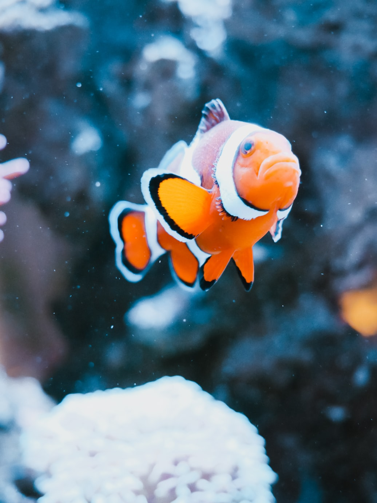

 Los peces payaso miden de 10 a 18 centímetros de longitud, siendo los machos más pequeños que las hembras. La coloración del cuerpo depende de la especie pero tienden a tener tonos amarillos, rojos, rosas, naranjas e incluso negruzcos, con 3 franjas blancas situadas en la cabeza, en la cola y en la región central del cuerpo. El borde de las aletas es negro.
Son peces omnívoros y consumen gran variedad de alimentos, incluidas algas, zooplancton y pequeños moluscos y crustáceos. También es común que se alimenten de los restos de la comida de las anémonas y hasta de sus tentáculos sueltos.
La mayor parte de las poblaciones de esta especie son estables en la actualidad, pero su captura ha aumentado a partir de los últimos años y en algunas regiones la densidad de población se ha reducido. Son peces muy populares en los acuarios y en general, el comercio del pez payaso es muy exitoso.